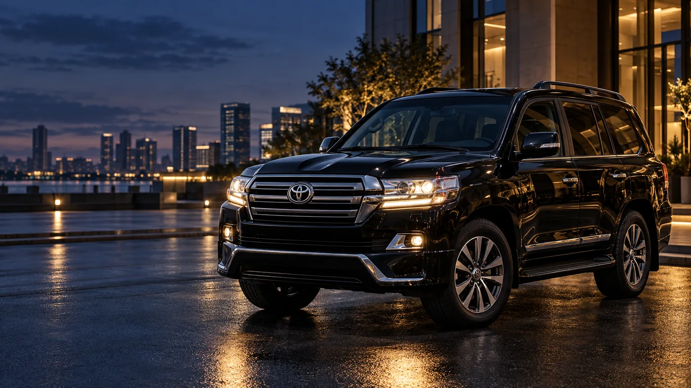

Укажите маршрут
Откуда и куда нужно ехать.
Когда нужно передать управление автомобилем водителю, напишите маршрут и время. Уточним возможность поездки и условия.

Имиджевый визуалЗаполните детали — подготовим сообщение для WhatsApp.
Откуда и куда нужно ехать.
Уточним время, автомобиль и доступность.
Подтвердим стоимость и порядок оказания услуги.
Круглосуточный режим пока не заявлен. Для срочной поездки позвоните и уточните доступность. Сообщение с маршрутом не является подтверждением выезда.
Форма подготовит текст на вашем устройстве. После проверки можно открыть WhatsApp и отправить сообщение самостоятельно. Сайт не подтверждает запись или выезд автоматически.
Напишите или позвоните — обсудим детали и следующий шаг.